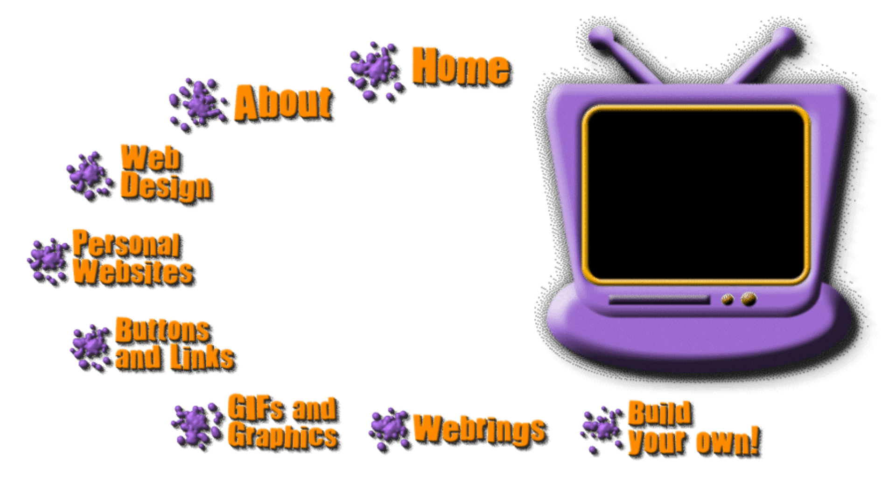

Before social media feeds and minimalistic layouts,
websites were creative, colorful, and full of life.
In the late 90s and early 2000s, websites became
digital self-expressions filled with bright colors,
animated graphics, and experimental layouts.
If you want to know how to create your own "old web" inspired
website, or you're just curious about what the web looked like
before social media took over, click through the buttons on my site
for info!